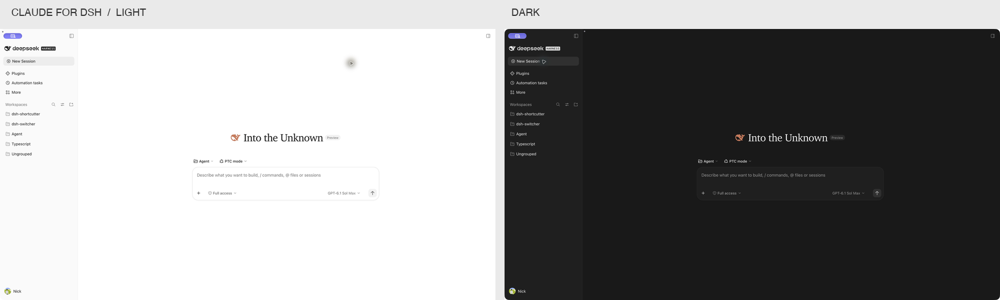
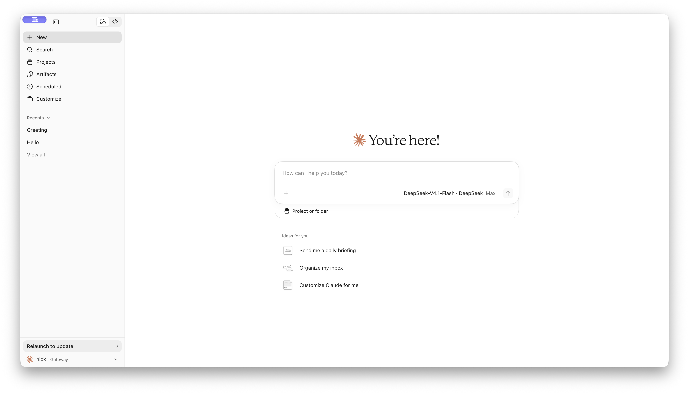
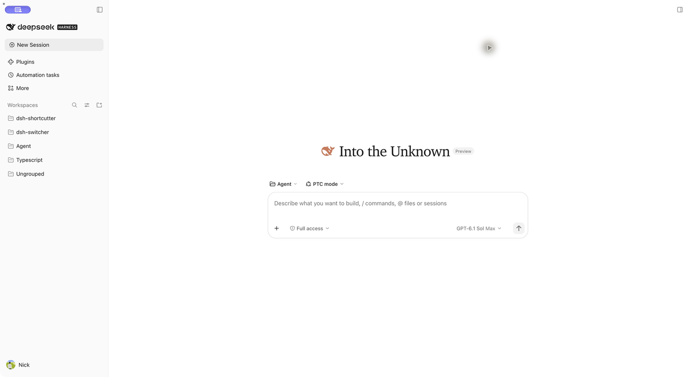
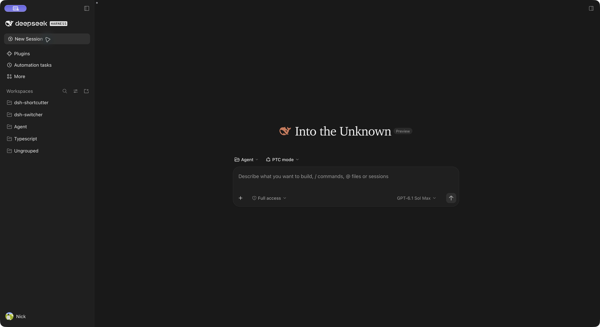
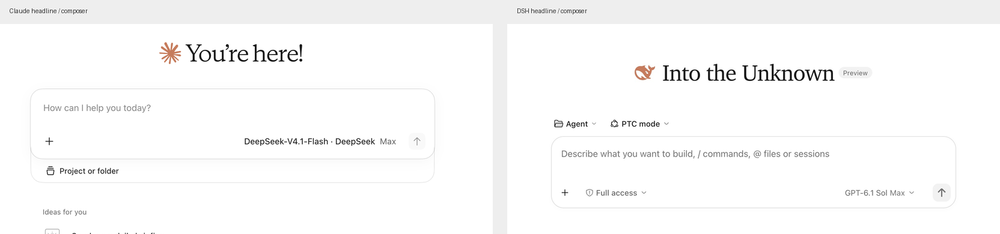

DESIGN ARCHIVE · 2026.11.14 · macOS
Claude → DSH
中性灰阶、衬线标题、克制的边界，以及留给内容的空间。这里收录前期设计研究、配色与排版规范，以及主题在 DSH 中的实际效果。
主题实机效果
查看验收记录 ↗
配色的基调
完整配色卡与明暗切换 ↗浅色画布
#FFFFFF浅色侧栏
#FAFAFA深色画布
#191919深色侧栏
#1F1F1F深色浮层
#303030陶土点缀
#D9775738 / 45.6
欢迎标题
DSH 使用本机 Charter 等衬线字体近似呈现；界面与中文正文沿用系统字体。
15 / 24
正文节奏
默认正文字号与行高。代码为 13 / 19px，均继续跟随用户的字号设置。
672 · 20 · 8
输入与控件
首页输入卡最大宽度 672px、圆角 20px，普通控件圆角 8px。
从参考到实际界面
同尺度全景对比 ↗








设计数据与原始依据
原件校验清单 ↗


版本、归档范围与使用说明
研究日期为 2026-11-14。Claude 实机截图来自正在运行的 5.1231.2；源码和字体规则来自当时已交付本机、尚未启动的 5.11492.5 更新包。“最新”限定为本机收到的更新。DSH 实现版本为 0.2.2-rc.3，主题为 0.1.2。
交互设计稿保留原字体样张，可离线打开。DSH 插件使用本机字体。原研究文件逐字节复制并保存 SHA-256；临时目录仅作为来源记录，浏览本资料不依赖它。详细说明见 归档目录。